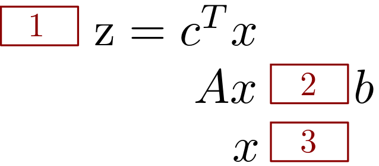
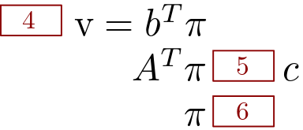

Chapter 2 Dualidade
2.1 Tabela de conversão primal-dual
Podemos usar a seguinte tabela para conversão de problemas primal-dual.
Considerando o modelo primal escrito na seguinte forma:

Em que:
\[\begin{cases} \text{1: max ou min} \\ \text{2: $\geq$, $=$ ou $\leq$} \\ \text{3: $\geq 0$,$\leq 0$ ou irrestrito} \end{cases}\]Mesmo sem usar a tabela já sabemos como ficam alguns termos do dual (sempre):

Para usar a tabela, usamos os valores do primal (1,2 e 3) que são conhecidos, para preencher os valores do dual desconhecidos (4,5,6). Usamos os seguintes passos:
- Determine qual é a coluna do primal considerando se o problema é de min (primeira coluna) ou de max (segunda coluna).
- Para cada valor do primal na coluna selecionada, encontre os equivalentes duais na mesma linha da outra coluna.
EXEMPLO 1: Escreva o dual do seguinte PL:
\[\begin{alignat*}{4} & \text{min z = } & 6x_1 & + 8x_2 \\ & \text{Sujeito à} & 3x_1 & + x_2 &\geq 4\\ & & 5x_1 & + 2x_2 & \geq 7\\ & & x_1 \geq 0 & \quad x_2 \geq 0& \end{alignat*}\]Temos que:
\[\begin{alignat*}{4} & \text{max v = } & 4\pi_1 & + 7\pi_2 \\ & \text{Sujeito à} & 3\pi_1 & + 5\pi_2 &\leq 6\\ & & \pi_1 & + 2\pi_2 & \leq 8\\ & & \pi_1 \geq 0 & \quad \pi_2 \geq 0& \end{alignat*}\]EXEMPLO 2: Escreva o dual do seguinte PL (sapateiro):
\[\begin{alignat*}{4} & \text{max z = } & 5x_1 & + 2x_2 \\ & \text{Sujeito à} & 10x_1 & + 12x_2 &\leq 60\\ & & 2x_1 & + x_2 & \leq 6\\ & & x_1 \geq 0 & \quad x_2 \geq 0& \end{alignat*}\]Temos que:
\[\begin{alignat*}{4} & \text{min v = } & 60\pi_1 & + 6\pi_2 \\ & \text{Sujeito à} & 10\pi_1 & + 2\pi_2 &\geq 5\\ & & 12\pi_1 & + \pi_2 & \geq 2\\ & & \pi_1 \geq 0 & \quad \pi_2 \geq 0& \end{alignat*}\]Você consegue pensar em alguma interpretação para o dual do problema do sapateiro? Crie uma situação que justifique o modelo dual (como o da nutricionista/vendedos de píluas).
reposta:
Podemos pensar na situação que alguém deseja contratar o sapateiro por uma hora. Como o sapateiro já tem um estoque de couro, esse estoque deve ser comprado também, ou seja, a pessoa que contrata o sapateiro precisa definir quanto pagar para ele por unidade de tempo, bem como por unidade de couro.
EXEMPLO 3: Escreva o dual do seguinte PL:
\[\begin{alignat*}{4} & \text{max z = } & 8x_1 & + 3x_2 & -2x_3 \\ & \text{Sujeito à} & x_1 & - 6x_2 & +x_3 &\geq 2\\ & & 5x_1 & + 7x_2 & & = 4\\ & & x_1 \geq 0 & \quad x_2 \geq 0 &\quad x_3 \geq 0 \end{alignat*}\]Temos que:
\[\begin{alignat*}{4} & \text{min v = } & 2\pi_1 & + 4\pi_2 \\ & \text{Sujeito à} & \pi_1 & + 5 \pi_2 &\geq 8\\ & & -6\pi_1 & + 7\pi_2 & \geq 3\\ & & \pi_1 & &\geq -2\\ & & \pi_1 \leq 0 & \quad \pi_2 \quad \text{irr.}& \end{alignat*}\]EXEMPLO 4: Escreva o dual do seguinte PL:
\[\begin{alignat*}{4} & \text{min z = } & 5x_1 & - 6x_2 & + 7x_3 & + x_4 \\ & \text{Sujeito à} & x_1 & + 2x_2 & -x_3 & - x_4 & = -7 \\ & & 6x_1 & - 3x_2 & + x_3 & - 7x_4 & \geq 14\\ & & -2.8x_1 & - 17x_2 & + 4x_3 & + 2x_4 & \leq -3\\ & & x_1 \geq 0 & \quad x_2 \geq 0 & x_3& \quad x_4 & \text{irr.} \end{alignat*}\]Temos que:
\[\begin{alignat*}{4} & \text{max v = } & -7\pi_1 & + 14\pi_2 & -3\pi_3 \\ & \text{Sujeito à} & \pi_1 & + 6 \pi_2 & -2.8\pi_3 &\leq 5\\ & & 2\pi_1 & -3 \pi_2 & -17\pi_3 &\leq -6\\ & & -\pi_1 & + \pi_2 & +4\pi_3 & = 7\\ & & -\pi_1 & - 7\pi_2 & +2\pi_3 & = 1\\ & & \pi_1 \quad \text{irr.} &\quad \pi_2 \geq 0 & \pi_3 \leq 0 \end{alignat*}\]2.2 Teoremas da dualidade
Existem diversas relações entre os modelos primal-dual. Essas relações são expressas por meio de teoremas, 3 dos quais muito importantes: teorema fraco (partes 1 e 2) e forte da dualidade, relacionando as funções objetivo, e o teorema das folgas complementares, relacionando os valores das soluções.
2.2.1 Teorema fraco da dualidade parte 1.
Seja \(x_0\) e \(\pi_0\) soluções factíveis quaisquer para o para primal(min)-dual(max), e \(Z_0\) e \(V_0\) seus valores objetivo, então temos que:
\(V_0 \leq Z_0\)
Seja o par primal-dual escritos na seguinte forma:
Primal(P):
\(min \quad z = c^Tx\)
s.a: \(\quad \quad Ax \geq b\)
\(\quad \quad x \geq 0\)Dual(D):
\(max \quad v = b^T\pi\)
s.a: \(\quad \quad A^T\pi \leq c\)
\(\quad \quad \pi \geq 0\)Como \(x_0\) e \(\pi_0\) são factíveis, temos que:
Também o são.
Multiplicando \(\quad \quad Ax_0 \geq b\) de P por \(\pi_0^T\) temos:
\(\pi_0^TAx_0 \geq \pi_0^Tb\) (I)
Agora, usamos a propriedade da tranposta da multiplicação de duas matrizes em \(\quad \quad A^T\pi_0 \leq c_0\) de D, que diz que:
\((AB)^T = B^TA^T\)
Portanto, temos que:
\(\pi_0^TA \leq c_0^T\)
Multiplicando ambos os lados por \(x_0\):
\(\pi_0^TAx_0 \leq c^Tx_0\) (II)
Temos um termo em comum em (I) e (II), juntando os termos em uma expressão:
\(\pi_0^Tb \leq \pi_0^TAx_0 \leq c^Tx_0\)
Os termos dos extremos são justamente os valores das funções objetivo primal-dual, portanto podemos escrever:
\(V_0 \leq \pi_0^TAx_0 \leq Z_0\)
Ainda:
\(V_0 \leq Z_0\), como queriamos demonstrar.